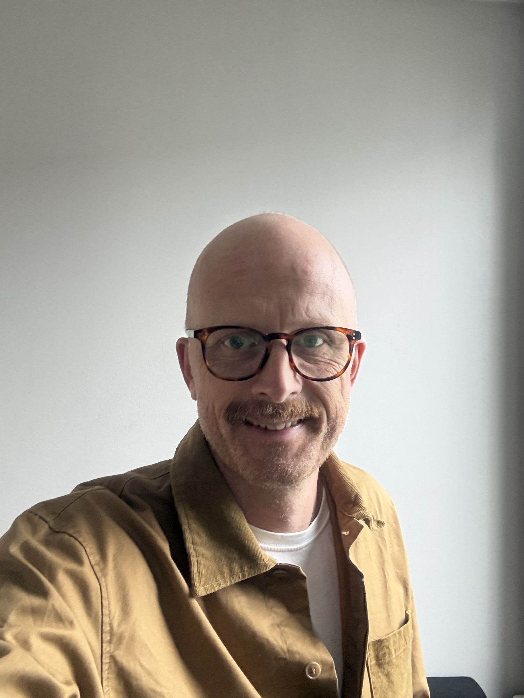

Teemme yhteistyötä perustajien kanssa, jotka ovat rakentaneet erinomaisia ohjelmistoja julkiselle sektorille – ja autamme heitä murtamaan kasvua rajoittavia esteitä. Olipa kyse sitten paikallisista markkinoista, teknisestä velasta, tekoälyosaamisen puutteesta tai yksin tekemisestä – PubliX antaa sinulle resurssit, verkoston ja yhteisön skaalautumiseen.


Kun samoja julkisen sektorin asiakkaita palvelevat yritykset liittyvät samaan ryhmään, tapahtuu jotain tehokasta: ristiinmyynnistä tulee luontevaa. Työvuorosuunnittelualustasi on jo käytössä kunnassa, joka tarvitsee apurahojen hallintajärjestelmäämme.
Sen sijaan, että kilpailisivat huomiosta, salkkuyhtiömme avaavat ovia toisilleen – jaettuja asiakassuhteita, yhteisiä markkinointiresursseja ja lämpimiä esittelyjä, joiden rakentaminen yksin veisi vuosia.

Tuotteesi tavoittavat uusia asiakkaita ryhmän olemassa olevien, luotettujen suhteiden kautta.

Yhdistä resurssit samoille päättäjille suunnattuihin tapahtumiin, kampanjoihin ja sisältöihin.

Salkun sisäinen ristiinmyynti vauhdittaa orgaanista kasvua jokaisessa yrityksessä.

Ohita kylmäkontaktointi – tule esitellyksi kollegan kautta, johon asiakas jo luottaa.
Julkiset hankinnat ovat monimutkaisia, byrokraattisia ja armottomia. Yksikin puuttuva vaatimus voi kaataa kaupan. Yksittäiselle yritykselle jokainen tarjous on kallis riski.
Useiden salkkuyhtiöiden myötä PubliX osallistuu useampiin julkisiin hankintoihin, useammissa kunnissa, useammin kuin mikään yksittäinen yritys voisi. Tämä volyymi antaa meille rakenteellisen edun – tunnemme prosessin, tiedämme sudenkuopat ja meillä on erilliset resurssit auttamaan sinua voittamaan.
Lisäksi tarjoamme jaetun IT-infrastruktuurin, turvallisuusauditoinnin ja vaatimustenmukaisuuskehykset, jotka täyttävät julkisen sektorin tiukimmat standardit.
Kun ostamme yrityksen, emme osta tuotetta – sijoitamme ihmisiin ja organisaatioon, jotka sen rakensivat. Tämä arvo ei selviä aggressiivisesta uudelleenjärjestelystä.
Jokainen ryhmämme yritys säilyttää oman toimitusjohtajansa, oman tiiminsä, oman toimistonsa ja oman päätöksentekovaltansa. Emme keskitä toimintoja leikataksemme kuluja. Emme yhdistä brändejä.
Sen sijaan investoimme olemassa olevan arvon kehittämiseen – jaetun oppimisen, yritysten välisen osaamisen rakentamisen ja sellaisen strategisen tuen kautta, joka auttaa perustajia keskittymään siihen, mitä he tekevät parhaiten: loistavien tuotteiden rakentamiseen.
"Liityimme PubliXiin kasvaaksemme nopeammin – ja ensimmäinen asia, jonka he kertoivat meille oli 'jatkakaa samaan malliin, olemme täällä auttamassa.'"
— Adam Hjort, Perustaja ja toimitusjohtaja, TidvisJos olet rakentanut menestyvän SaaS-yrityksen viimeisen 10 tai 20 vuoden aikana, tiedät jo: tekoäly muuttaa kilpailuasetelman täysin. Uusia tuotteita, uutta hinnoittelua, uusia odotuksia.
PubliX antaa sinulle pääsyn erilliseen tekoäly- ja teknologiaosaamiseen – ei konsultointiprojektina, vaan sisäänrakennettuna kykynä. Autamme sinua modernisoimaan teknologiapinosi, automatisoimaan sisäiset prosessit, rakentamaan tekoälyavusteisia ominaisuuksia ja kehittämään uusia markkinastrategioita.
Nopeimmin sopeutuvat yritykset voittavat. Haluamme sinut mukaan tälle matkalle.

Integroi tekoäly tuotteeseesi tuottaaksesi enemmän arvoa ja erottuaksesi kilpailijoista.

Tekoälypohjainen liidien generointi, kvalifiointi ja kontaktointi myyntiputken nopeuttamiseksi.

Automatisoi sisäiset työnkulut – asiakastuki, perehdytys, laskutus – tiimisi vapauttamiseksi.

Tekoälyavusteinen markkinatieto, hinnoittelun optimointi ja kilpailija-analyysi.
Tuotteesi toimii kotimarkkinoillasi. Se voisi toimia koko Euroopassa. Kansainvälinen laajentuminen vaatii kuitenkin markkinatuntemusta, juridista osaamista ja lokalisointikykyjä, joita on vaikea rakentaa tyhjästä.
PubliX on jo läsnä Pohjoismaissa ja laajentuu parhaillaan Pohjois-Eurooppaan, Britanniaan ja DACH-alueelle. Tuomme markkinatietoa, juridisia puitteita, kieliosaamista ja markkinointiasiantuntemusta, jotka mahdollistavat yritystemme lanseeraukset uusilla markkinoilla.
Euroopan julkinen sektori on valtava, alidigitalisoitu markkina. Me autamme sinua pääsemään sinne.
PubliXiä johtavat ihmiset, jotka ovat rakentaneet, skaalanneet ja operoineet ohjelmistoyrityksiä. Kun puhut kanssamme, puhut jonkun kanssa, joka on tehnyt samaa työtä kuin sinä.

Talous- ja operatiivinen johtaja

Hallituksen jäsen, Aspira Partners

Hallituksen jäsen, Aspira Partners
Perustajat, jotka johtavat salkkuyhtiöitämme.
Perustaja ja toimitusjohtaja, Tidvis

Perustaja ja toimitusjohtaja, digiPlant

Perustaja ja toimitusjohtaja, Aspicore

Perustaja ja toimitusjohtaja, Koivu Solutions
Toimitusjohtaja, Embrace Safety

Tarjoamme valikoidulle joukolle perustajia luottamuksellisen ja perusteellisen arvioinnin kasvupotentiaalista – vakavasti otettavan analyysin siitä, kuinka yrityksesi voisi skaalautua oikeilla resursseilla. Uusia markkinoita, vahvempia tuotteita, tekoälykyvykkyyksiä, vähemmän teknistä velkaa. Tämä ei ole yleisluontoinen raportti. Se on räätälöity prosessi, jonka toimitusjohtajamme esittelee henkilökohtaisesti.
Kerro meille kuka olet ja mitä yrityksesi tekee. Käymme jokaisen hakemuksen läpi henkilökohtaisesti.
Jos näemme potentiaalisen sopivuuden, sovimme luottamuksellisesta keskustelusta ja allekirjoitamme molemminpuolisen salassapitosopimuksen suojellaksemme molempia osapuolia.
Uudet markkinat, tuotelaajennukset, tekoälykyvykkyydet, teknisen velan vähentäminen ja kilpailuasetelma – räätälöitynä yrityksellesi.
Arviointisi esitellään yksityisessä tapaamisessa, perustajalta perustajalle. Näkemykset ovat sinun – ei sitoumuksia, ei paineita.
Käymme jokaisen hakemuksen läpi henkilökohtaisesti. Kaikkea tietoa käsitellään ehdottoman luottamuksellisesti.
PubliXiin liittymisen jälkeen olemme lanseeranneet kaksi täysin uutta tekoälypohjaista tuotetta ja kouluttaneet koko kehitystiimimme. Tällainen transformaatio ei yksinkertaisesti olisi ollut mahdollista yksin.
Alexander Törnqvist
Perustaja ja toimitusjohtaja, digiPlant
Olin rakentanut Aspicorea yli vuosikymmenen. Kun oli aika miettiä seuraavaa sukupolvea, PubliX tarjosi tien, joka suojeli tiimiäni, asiakkaitani ja rakentamaani perintöä – samalla varmistaen yrityksen jatkuvan kasvun.
Harri Tanner
Perustaja, Aspicore
Tiesimme aina, että Sotender voisi toimia Suomen ulkopuolella, mutta meillä ei ollut verkostoa tai resursseja sen toteuttamiseen. PubliX avasi ovet Ruotsiin muutamassa kuukaudessa – ja nyt suunnittelemme seuraavaa markkinaa.
Janne Salmi
Perustaja ja toimitusjohtaja, Koivu Solutions
Olitpa sitten kartoittamassa vaihtoehtojasi, utelias yrityksesi nykytilasta tai haluat vain puhua jonkun kanssa, joka ymmärtää markkinaasi – keskustelemme mielellämme kanssasi.